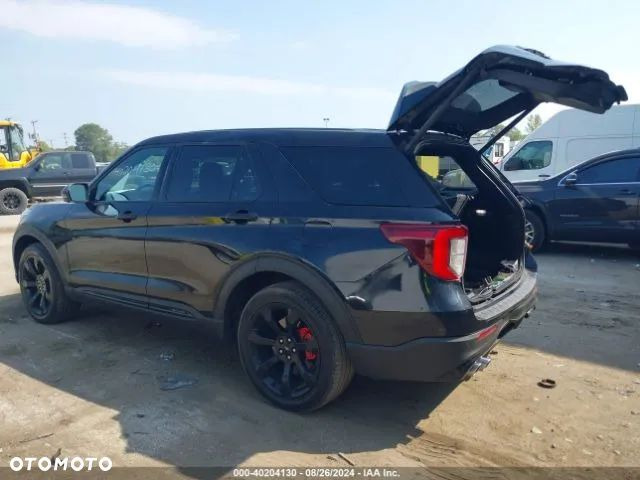
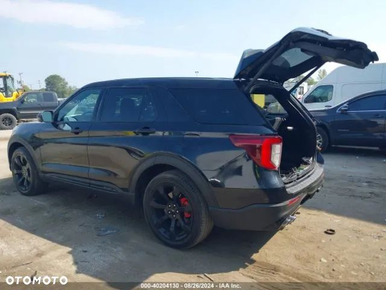
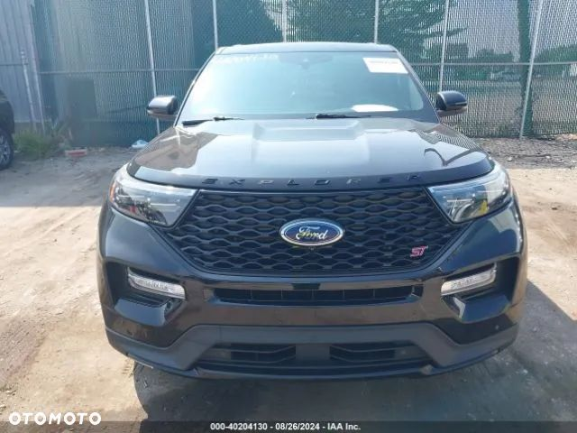
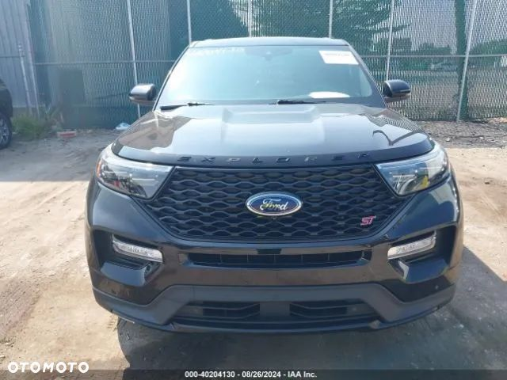
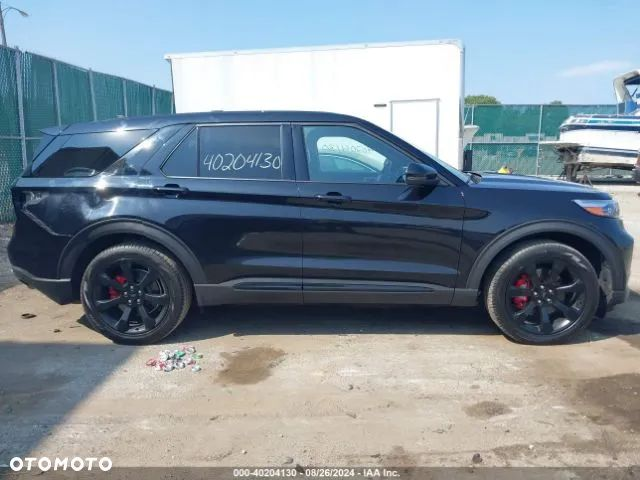
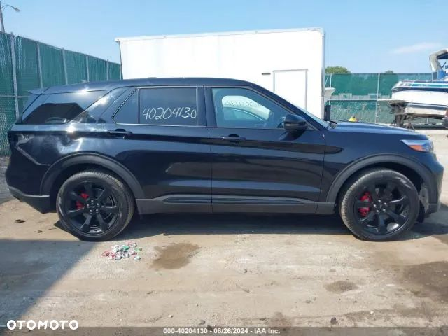
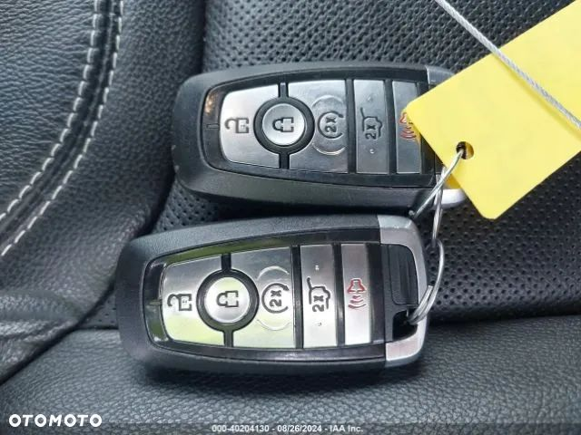
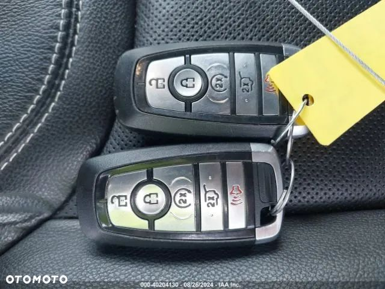
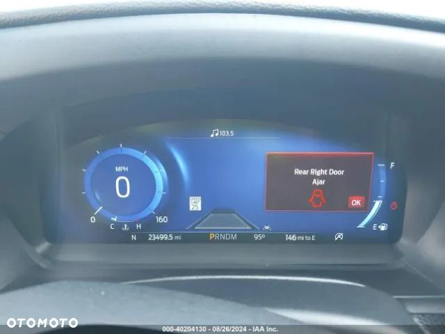
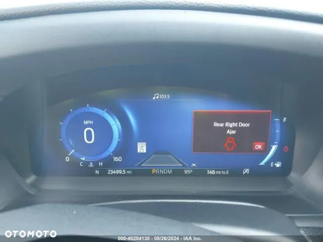

Zapraszamy do udziału w licytacji samochodu, zajmiemy się dostarczeniem auta pod wskazany adres, dbając o bezpieczeństwo transakcji oraz Twoją satysfakcję.
Oferowany pojazd:
➤ Ford Explorer ST 4x4
➤ 2021
➤ 3.0 V6 400 KM
➤ 37833 km
➤ 89 - 119 tysięcy PLN (szacowana cena za sprowadzenie samochodu pod dom)
Uszkodzenie auta: tył pojazdu
Jesteśmy autoryzowanym przedstawicielem domu aukcyjnego IAAI, na którym jest oferowany powyższy egzemplarz.
Zapewniamy:
✔ bezpieczeństwo transakcji
✔ indywidualną, przejrzystą kalkulację kosztów sprowadzenia przy uwzględnieniu aktualnych kursów $ i €
✔ sprawdzenie i przesłanie historii pojazdu (serwis, zdarzenia kolizyjne)
✔ przesyłamy również krótki film z działania silnika na życzenie Klienta
Zajmiemy się dostarczeniem Twojego auta z parkingu domu aukcyjnego w USA pod wskazany adres w Polsce. Cały proces sprowadzenia auta jest monitorowany przez dostęp do Panelu Klienta oraz nadzorowany przez przydzielonego opiekuna, który pozostaje do Twojej dyspozycji podczas przebiegu licytacji, transportu oraz koniecznych formalności.
Naprawa auta możliwa zarówno we własnym zakresie, jak i w zaprzyjaźnionej sieci zakładów mechanicznych – według życzenia Klienta.
Zainteresowany? Skontaktuj się ze mną za pośrednictwem telefonu lub WhatsApp:
☎︎ (Rafał)
☎︎ (Tomek)
Zajmujemy się również poszukiwaniem aut na życzenie Klienta.

 


 
 


 
 
